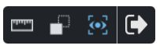
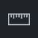
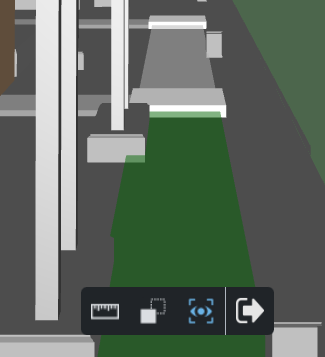
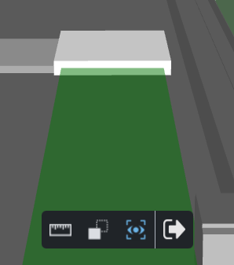

Routes
A Route can be displayed in the 3D viewer by selecting it in the Routes panel of the Display Manager.
For an example of how to activate and follow a Route, refer to the How to navigate a Route section below.
Route elements
A typical Route comprises of the following element types:
|
One or more Way Points (or start points). All Way Points defined for a particular Route are displayed in the Routes panel. Each Way Point can be used as the starting point when activating the Follow Camera mode. |
|
One or more connected Paths. A Path moves the camera from one position to another. |
|
Zero or more connected Junctions. When moving along a Path, a Junction always stops the camera motion, allowing the user to pick the next path to follow. |


Note that none of the Route elements can be picked. You also cannot place measurement points on Route elements. |
To hide a displayed Route, unselect it in the Display Manager.
Follow Camera

You can activate the Follow Camera mode by clicking the Follow Camera button displayed next to a Way Point in the Routes panel.
Activating the Follow Camera mode will:
- Position the 3D viewer camera 1.8m above the selected Way Point.
- Align the camera along the direction of one of the connected paths.
- Change the viewer toolbar to only show commands which are relevant to the Follow Camera mode.
Movement in the Follow Camera mode
Press W or the Up Arrow key to move the camera forward along the current path.
Press S or the Down Arrow key to move the camera backward along the current path.
Press A or the Left Arrow key to turn left.
Press D or the Right Arrow key to turn right.
Press and hold the Left mouse button and move your mouse to look around in any direction (including up and down).
Press the Esc key to exit the Follow Camera mode.
When moving (both forward or backward), the camera will automatically stop once it reaches a Junction.
At each junction, the path closest to the camera's direction will be selected automatically as the next path to follow. This path will also be highlighted using a green color.
Follow Camera toolbar

Only the following viewer commands are available in the Follow Camera mode:
 |
Sets the viewer in Measure Mode. In measure mode, you can place measurement points. |
|
X-ray - Command to set all assets in the viewer to be displayed using a gray, transparent appearance, resembling an X-ray image. The only asset which remains displayed opaque is the currently picked asset. This view mode is therefore useful for quickly finding a picked asset within a large scene. |
|
Auto-align - When the auto-align mode is active, the camera direction is automatically aligned to the direction of the current path. |
Exit - Exit the Follow Camera mode, switching back to the previously active viewer mode. |

Note that other than the commands listed above, none of the other viewer functions, such as Zoom or Create Scratch Pad Page, are available. |
How to navigate a Route
- Display the route that you want to navigate in the Display Manager by checking the checkbox shown next to the route's name.

- Choose one of the Way Points available for the route and click on the Follow Route icon. This will switch the 3D viewer into the Follow Camera mode.

- Collapse the Display Manager panel by clicking on its tab.
- You are now positioned at the chosen way point, facing one of the paths which lead to the way point. This path is highlighted in green.

- To proceed to the Junction lying at the end of the highlighted path, press and hold the W or the Up Arrow key.
- Once the Junction is reached, the forward movement will stop automatically. The path lying ahead of you will become the highlighted path.

- Press and hold the left mouse button and move your mouse to the left until the path leading to the left from the current Junction becomes the highlighted path.

- Press and hold the W or Up Arrow key again to proceed to the next Junction. Because the Auto-Align mode is active, the direction of the camera will be adjusted automatically to match with the direction of the traveled path.
- Repeat the previous steps until you reach the end of the route.
- If at any point of your travel you decide to stop and more closely examine a part of the model, simply release the pressed key (W or Up Arrow), the movement will stop immediately.
- When you're not moving, you can pick and measure.
- Left-click on one of the displayed assets to pick it. You can use the Asset Context Menu to execute actions on the picked asset, such as Create Note or display Asset Information.

- You can also switch to the Measurements mode and place measurement points.

- Once done navigating the Route, press the Esc key or click the Exit button to end the Follow Camera mode and return to the default viewer setup.